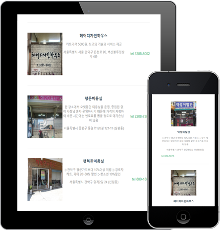

HOME
소통과 노력으로
항상 발전하는
개발자 김현중입니다.
portfolio_v2022 Web Publisher
Front End Development
프로필
- Kim Hyun Joong
- 안녕하세요.
웹퍼블리셔 · 프론트엔드 개발자 김현중입니다.
-
- 이름
- 김현중(Kim HyunJoong)
-
- 지원부분
- 웹퍼블리셔 · 프론트엔드개발
- 연락처
- 010-3687-5176
-
- 생년월일
- 1996.11.14
- 이메일
- yui3268@naver.com
-
- 보유스킬
- HTML5, CSS3, JavaScript, jQuery, JSON(비동기처리), AJAX(비동기처리), Bootstrap(Framework), WordPress(CMS), Vue.js, React.js, PHP, MySQL, Git, Adobe Photoshop, Adobe illustrator
PC - KG케미칼 기업형PC 웹사이트 제작

KG케미칼기업형 PC
HTML4.01로 제작되어 웹표준에 주순한 적절한 태그를 사용하지 못하였고 텍스트로 처리할 수 잇는 부분에 불필요한 이미지처리로 웹 접근성 문제가 있다고 파악하여, 웹 접근성과 웹 표준 향상에 초점을 두고 새롭게 구축하였습니다.
VISIT SITE- 제작기간
- 2022.08.04 ~ 2022.08.26 (약 4주)
- 제작스킬
- HTML5, CSS3, JavaScript, jQuery, AJAX, PHP, MySql, Adobe Photoshop, illustrator, W3C 웹표준 통합 마크업 검사(html/css), 웹접근성검사(K-WAH), 크로스브라우징 완료
- 폰트 및 컬러
- ROBOTO Noto Sans KR
MOBILE - KG케미칼 모바일 웹사이트 제작

KG케미칼모바일
PC용으로 구현된 기업형 KG케미칼 웹사이트를 다양한 모바일 기기에 적합한 UI를 적용하여 새롭게 구현한 모바일용 웹입니다. 마우스가 아닌 사용자의 터치 이벤트를 중점적으로 제작하였습니다.
VISIT SITE- 제작기간
- 2022.09.04 ~ 2022.09.12 (약 1주)
- 제작스킬
- HTML5, CSS3, JavaScript, jQuery, AJAX, PHP, MySql, Adobe Photoshop, illustrator, W3C 웹표준 통합 마크업 검사(html/css), 웹접근성검사(K-WAH), 크로스브라우징 완료
- 폰트 및 컬러
- ROBOTO Noto Sans KR
RESPONSIVE - NAPOLI 반응형 웹사이트 제작

NAPOLI반응형 웹
Italy 축구 팀 NAPOLI를 주제로 다양한 디바이스 해상도에 따라 변하는 반응형 사이트로 축구 팀의 분위기와 이미지를 고려하여 시각적인 부분을 강조하여 제작했습니다.
VISIT SITE- 제작기간
- 2022.09.16 ~ 2022.09.30 (약 2주)
- 제작스킬
- HTML5, CSS3, Media Query, JavaScript, jQuery, AJAX, Adobe Photoshop, illustrator, Premiere Pro, W3C 웹표준 통합 마크업 검사(html/css), 웹접근성검사(K-WAH), 크로스브라우징 완료
- 폰트 및 컬러
- Russo One
BOOTSTRAP - MINI 반응형 웹사이트 제작


MINI부트스트랩 반응형
부트스트랩을 이용하여 보다 간편하게, 다양한 해상도의 디바이스에서 이용할 수 있는 반응형 웹사이트를 제작하였습니다.
VISIT SITE- 제작기간
- 2022.10.05 ~ 2022.10.08 (약 4일)
- 제작스킬
- BootStrap, HTML5, CSS3, JavaScript, jQuery, Adobe Photoshop, illustrator, W3C 웹표준 통합 마크업 검사(html/css), 웹접근성검사(K-WAH), 크로스브라우징 완료
- 폰트 및 컬러
- Stick No BILLS
WORDPRESS - GUCCI 반응형 웹사이트 제작

GUCCI워드프레스
오픈소스 CMS 중 가장 많이 쓰이는 워드프레스의 테마와 플러그인을 사용하여 구찌를 주제로 한 웹사이트를 구현했습니다.
VISIT SITE- 제작기간
- 2022.11.10 ~ 2022.11.12 (약 3일)
- 제작스킬
- Wordpress, HTML5, CSS3, JavaScript, jQuery, Adobe Photoshop, illustrator, W3C 웹표준 통합 마크업 검사(html/css), 웹접근성검사(K-WAH), 크로스브라우징 완료
- 폰트 및 컬러
- Roboto Slab Noto Sans KR
vue.js - 서울시 착한 가게 SPA 웹사이트 제작


서울시 착한가게vue.js(SPA)
고성능의 싱글 페이지 애플리케이션(SPA)을 구축을 하고 Vue에서 제공하는 CSS 라이브러리인 'Vuetify'를 활용하여 홈페이지를 제작하고 서울시 착한 가게 json데이터를 불러와 원하는 정보만 검색(filter 기능) 및 탭 기능을 구현하였습니다.
VISIT SITE- 제작기간
- 2022.12.10 ~ 2022.12.15 (약 6일)
- 제작스킬
- VUE, Vuetify, HTML5, CSS3, JavaScript, AJAX, JSON, Adobe Photoshop, 크로스브라우징 완료
- 폰트 및 컬러
- Roboto Slab Noto Sans KR